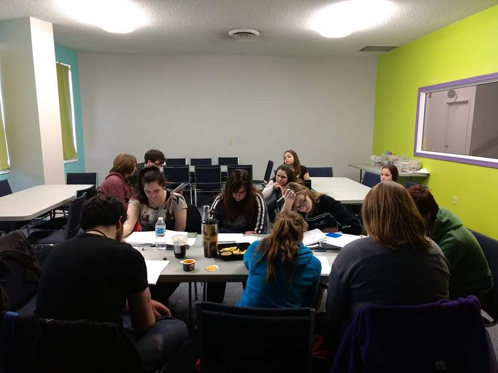

Daniel Astley's Portfolio
|
Theatre Experience
|
Video Projects
|
Audio Projects
|
Scripts and Short Stories
|
Contact
Spiritus Theatre: A Love Worth Dying For
Dani during this production, had stepped down to understudy. This was due to Dental surgery and fear it might not heal
in time. but by the final night he was able to step in and cover for another actor who felt ill. He was understudy for
the roles of Levi, and Executioner. The show ran August of 2018 and was directed by Robbie Nagle
Rehersal Photos

You Have reached the bottom of This page!!